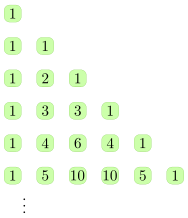
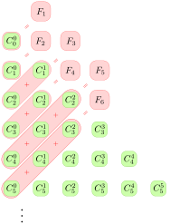

O Triângulo de Pascal é um triângulo numérico infinito formado por números binomiais \(C_n^p\text{,}\) na qual, \(n\) representa a linha, e \(p\) representa a coluna, com \(n,p \geq 0\text{.}\) Abaixo temos duas representações do mesmo triângulo, com \(0\leq n \leq 5\text{.}\)
Figura3.1.2.O Triângulo de Pascal.

Figura3.1.3.O Triângulo de Pascal.
Tecnologia3.1.4.
Obtenha o Triângulo de Pascal referente ao intervalo escolhido.
Figura3.1.5.
A seguir, veremos a relação de Stifel, que afirma que o valor da soma de dois elementos consecutivos de uma linha do triângulo de Pascal é igual ao elemento que está abaixo do segundo elemento dessa soma. Veja a figura abaixo:
A seguir, veremos o Teorema das Linhas, que afirma que o valor da soma de todos os elementos da linha \(n\) do triângulo de Pascal é igual \(2^n\text{.}\) Veja a figura abaixo:
conta o número de todos os subconjuntos, de um conjunto com n elementos.
Essa quantidade é \(2^n\text{,}\) pois para formar um subconjunto, deve-se decidir, para cada elemento do conjunto, se ele pertencerá ou não ao subconjunto. Há dois modos de decidir o que fazer com o primeiro elemento do conjunto, 2 modos com o segundo e assim por diante. Portanto o valor da soma de uma linha do Triângulo de Pascal é
Vamos resolver o Exemplo 3.1.13 usando o Sage. Primeiramente note que
\begin{equation*}
S = \sum_{k=1}^n \frac{1}{k+1}C_n^k.
\end{equation*}
Definimos as variáveis \(\verb|n|\) e \(\verb|k|\text{,}\) definimos a função \(\verb|C(n,p)=binomial(n,p)|\) e usamos o método \(\verb|sum|\) com a expressão do somatório. No final do código do método \(\verb|sum|\) foi acrescentado o comando \(\verb|.show()|\) apenas para o resultado ser exibido no formato compilado pelo \(\LaTeX\text{,}\) ou seja, visualmente mais elegante.
A seguir, veremos o Teorema das Colunas, que afirma que no triângulo de Pascal, o valor da soma dos elementos da coluna \(p\text{,}\) do início até a linha \(p+n\) é igual ao elemento que está uma linha abaixo e uma coluna à direita. Veja a figura abaixo:
Vamos reescrever o polinômio \(k^3+k^2\) como um polinômio de grau \(3\) que envolve o produto de termos consecutivos, pois assim poderemos trocar o produto de termos consecutivos por alguma combinação da seguinte maneira:
Vamos resolver o Exemplo 3.1.20 usando o Sage. Primeiramente note que
\begin{equation*}
S = \sum_{k=1}^n k^2(k+1).
\end{equation*}
Definimos as variáveis \(\verb|n|\) e \(\verb|k|\text{,}\) usamos o método \(\verb|sum|\) com a expressão do somatório. No final do código do método \(\verb|sum|\) foi acrescentado o comando \(\verb|.show()|\) apenas para o resultado ser exibido no formato compilado pelo \(\LaTeX\text{,}\) ou seja, visualmente mais elegante.
A seguir, veremos o Teorema das Diagonais, que afirma que no triângulo de Pascal, o valor da soma dos elementos de uma diagonal, começando na coluna zero e linha \(n\text{,}\) até a linha \(n+p\text{,}\) é igual ao elemento que está uma linha abaixo. Veja a figura abaixo:
Uma das propriedades mais surpreendentes do Triângulo de Pascal é a sua conexão com a Famosa Sequência de Fibonacci. Lembre-se que a sequência de Fibonacci \((F_n)\) é definida por \(F_1 = 1\text{,}\)\(F_2 = 1\) e, para \(n \geq 3\text{,}\)\(F_n = F_{n-1} + F_{n-2}\text{.}\) Cada termo é a soma dos dois anteriores:
Se somarmos os elementos do Triângulo de Pascal ao longo de suas "diagonais rasas" (subindo uma linha e avançando uma coluna), obteremos exatamente os números de Fibonacci.

Figura3.1.26.Teorema das Diagonais.
Teorema3.1.27.
(Diagonais Rasas e Fibonacci)
A soma dos elementos da \(n\)-ésima diagonal rasa do triângulo de Pascal resulta no \((n+1)\)-ésimo número de Fibonacci. Matematicamente:
Faremos a prova por indução matemática sobre \(n\text{.}\)
Casos base: Para \(n=0\text{,}\) a soma tem apenas o termo \(C_0^0 = 1\text{,}\) e sabemos que \(F_1 = 1\text{.}\) Para \(n=1\text{,}\) a soma tem apenas o termo \(C_1^0 = 1\text{,}\) e sabemos que \(F_2 = 1\text{.}\)
Passo indutivo: Suponha que a fórmula seja válida para todos os valores menores ou iguais a um certo \(n\text{.}\) Queremos mostrar que ela vale para \(n+1\text{.}\) A soma para \(n+1\) é:
Juntando o termo \(C_n^0\) ao primeiro somatório, obtemos exatamente a soma correspondente a \(n\text{.}\) No segundo somatório, fazemos uma mudança de índice \(j = k-1\text{:}\)
Muitas identidades envolvendo coeficientes binomiais podem ser demonstradas de forma puramente algébrica, desenvolvendo os fatoriais. No entanto, o método das provas combinatórias (ou contagem dupla) costuma ser muito mais elegante. Esse método consiste em contar os elementos de um mesmo conjunto de duas maneiras diferentes e, em seguida, igualar os resultados obtidos. Aplica-se perfeitamente ao próximo teorema.
Teorema3.1.28.Identidade de Vandermonde.
Para quaisquer inteiros não negativos \(m\text{,}\)\(n\) e \(p\) (com \(p \leq m+n\)), a seguinte identidade é válida:
Faremos a demonstração por meio de um argumento combinatório.
Imagine um grupo composto por \(m+n\) pessoas, sendo \(m\) mulheres e \(n\) homens. O nosso objetivo é determinar o número de maneiras de formar uma comissão com exatamente \(p\) pessoas a partir desse grupo.
Modo 1 (Contagem direta): Como há \(m+n\) pessoas no total e queremos selecionar \(p\text{,}\) o número total de maneiras de formar essa comissão é, de forma direta:
\begin{equation*}
C_{m+n}^p
\end{equation*}
Modo 2 (Dividindo em casos): Podemos classificar todas as possíveis comissões baseando-nos na quantidade de mulheres que farão parte dela. Seja \(k\) o número de mulheres na comissão. A quantidade \(k\) pode variar de \(0\) até \(p\text{.}\)
Para um número fixo \(k\) de mulheres, precisamos realizar duas tarefas sucessivas:
Escolher \(k\) mulheres dentre as \(m\) disponíveis: isso pode ser feito de \(C_m^k\) maneiras.
Preencher as restantes \(p-k\) vagas da comissão exclusivamente com homens, escolhidos dentre os \(n\) disponíveis: isso pode ser feito de \(C_n^{p-k}\) maneiras.
Pelo Princípio Multiplicativo, para um valor fixo de \(k\text{,}\) existem \(C_m^k \cdot C_n^{p-k}\) modos de formar a comissão.
Como a comissão terá 0 mulheres, OU 1 mulher, OU 2 mulheres, e assim sucessivamente, os casos são exaustivos e mutuamente exclusivos. Aplicando o Princípio Aditivo, somamos todos os cenários possíveis (de \(k=0\) até \(p\)):
Na Identidade de Vandermonde, faça \(m = n\) e \(p = n\text{.}\) O lado direito da igualdade torna-se \(C_{n+n}^n = C_{2n}^n\text{.}\) O lado esquerdo torna-se:
Tem-se \(n\) comprimidos de substâncias distintas, solúveis em água e incapazes de reagir entre si. Quantas soluções distintas podem ser obtidas dissolven-se um ou mais desses comprimidos em um copo com água?
Em uma festa de Natal, uma família decide seguir a tradição da música "Os 12 dias de Natal". No 1º dia, dá-se 1 presente. No 2º dia, dão-se 3 presentes (\(1+2\)). No 3º dia, dão-se 6 presentes (\(1+2+3\)). Em geral, no \(k\)-ésimo dia, dão-se \(1+2+...+k\) presentes. Utilizando o Triângulo de Pascal, quantos presentes são dados no total após os 12 dias?
A quantidade de presentes dados no \(k\)-ésimo dia é a soma de uma progressão aritmética: \(1+2+\cdots+k = \frac{k(k+1)}{2}\text{.}\) Note que isso é exatamente a fórmula da combinação \(C_{k+1}^2\text{.}\)
O total de presentes ao longo de 12 dias é a soma:
Usando a Relação de Stifel, demonstre que a soma com sinais alternados de qualquer linha do Triângulo de Pascal (para \(n \geq 1\)) é sempre igual a zero. Ou seja, mostre que:
Substituindo cada termo (exceto o primeiro e o último) pela Relação de Stifel, \(C_n^k = C_{n-1}^k + C_{n-1}^{k-1}\text{,}\) e lembrando que \(C_n^0 = C_{n-1}^0 = 1\) e \(C_n^n = C_{n-1}^{n-1} = 1\text{,}\) temos uma soma telescópica:
Ao remover os parênteses, todos os termos se cancelam perfeitamente em pares: o \(C_{n-1}^0\) positivo corta com o negativo, o \(C_{n-1}^1\) negativo corta com o positivo do termo seguinte, e assim por diante, restando exatamente 0.
9.
Determine a soma dos elementos de ordem par da \(n\)-ésima linha do Triângulo de Pascal. Em outras palavras, calcule o valor de:
Seja \(S_{par}\) a soma dos elementos de posições pares (índices 0, 2, 4...) e \(S_{impar}\) a soma dos elementos de posições ímpares (índices 1, 3, 5...).
Pelo Teorema das Linhas, sabemos que \(S_{par} + S_{impar} = 2^n\text{.}\)
Pelo exercício anterior, a soma alternada é zero, o que significa que \(S_{par} - S_{impar} = 0 \implies S_{par} = S_{impar}\text{.}\)
Como as duas metades são iguais e somam \(2^n\text{,}\) cada uma delas deve valer exatamente a metade de \(2^n\text{.}\) Logo:
Pela Relação de Stifel, a soma de dois binomiais consecutivos na mesma linha é igual ao elemento logo abaixo deles: \(C_x^3 + C_x^4 = C_{x+1}^4\text{.}\)
Igualando à equação dada, temos \(C_{x+1}^4 = C_{12}^y\text{.}\)
Comparando os denominadores (as linhas), temos \(x+1 = 12 \implies x = 11\text{.}\)
Para a coluna \(y\text{,}\) temos duas possibilidades: ou \(y = 4\text{,}\) ou, pelas Relações Complementares (\(C_n^p = C_n^{n-p}\)), \(y = 12 - 4 = 8\text{.}\)
11.
Mostre algebricamente ou por meio de um argumento combinatório que \(C_{n+1}^2 = C_n^2 + n\text{.}\)
Argumento Combinatório: Imagine que queremos escolher 2 pessoas de um grupo com \(n+1\) pessoas. O número total de modos é \(C_{n+1}^2\text{.}\) Podemos dividir esse grupo isolando uma pessoa específica (digamos, o João). As duplas formadas podem ser de dois tipos:
O João NÃO faz parte da dupla: precisamos escolher 2 pessoas entre as \(n\) restantes. Isso dá \(C_n^2\) modos.
O João FAZ parte da dupla: precisamos escolher apenas 1 companheiro para ele entre as \(n\) pessoas restantes. Isso dá \(n\) modos.
Pelo Princípio Aditivo, \(C_{n+1}^2 = C_n^2 + n\text{.}\)
Argumento Algébrico: Basta observar que \(n = C_n^1\text{.}\) Logo, a equação se torna \(C_{n+1}^2 = C_n^2 + C_n^1\text{,}\) que é exatamente a Relação de Stifel!
12.
Calcule o valor da soma: \(C_7^0 + C_6^1 + C_5^2 + C_4^3\text{.}\)
Esta soma representa exatamente uma "diagonal rasa" do Triângulo de Pascal, partindo da linha \(n=7\) e coluna \(p=0\text{.}\) Pelo Teorema de Fibonacci no Triângulo de Pascal, a soma \(\sum_{k=0}^{\lfloor n/2 \rfloor} C_{n-k}^k\) é igual ao número de Fibonacci \(F_{n+1}\text{.}\)
Como aqui começamos com \(C_7^0\text{,}\) temos \(n=7\text{.}\) Logo, a soma é igual a \(F_8\text{.}\)
Calculando a sequência de Fibonacci (1, 1, 2, 3, 5, 8, 13, 21), obtemos \(F_8 = 21\text{.}\)
13.
Qual é o maior elemento da 100ª linha do Triângulo de Pascal?
Utilizando o Teorema que avalia o crescimento dos termos de uma linha (\(C_n^p \lt C_n^{p+1}\) se \(p \lt \frac{n-1}{2}\)), temos \(n = 100\text{.}\)
A condição de crescimento se mantém enquanto \(p \lt \frac{100-1}{2} = 49.5\text{.}\) Como \(p\) é inteiro, a sequência cresce até \(p = 49\text{.}\) Ou seja, \(C_{100}^{49} \lt C_{100}^{50}\text{.}\)
Para \(p \gt 49.5\text{,}\) a sequência começa a decrescer (\(C_{100}^{50} \gt C_{100}^{51}\)).
Portanto, o elemento máximo ocorre no centro exato da linha par, que é \(C_{100}^{50}\text{.}\)
14.
Se \(C_{18}^p = C_{18}^{p+2}\text{,}\) qual é o valor de \(p\text{?}\)
Sabemos que numa mesma linha do triângulo de Pascal, dois elementos só podem ser iguais em duas situações:
Eles ocupam a mesma coluna (ou seja, são o mesmo elemento): \(p = p+2\text{,}\) o que resulta num absurdo (\(0=2\)).
Eles são equidistantes dos extremos (Relação Complementar): \(C_n^p = C_n^{n-p}\text{.}\) Portanto, a soma de suas colunas deve resultar na respectiva linha.
Aplicando o segundo caso: \(p + (p+2) = 18 \implies 2p = 16 \implies p = 8\text{.}\)
15.
Usando o Teorema de Fibonacci no Triângulo de Pascal, calcule o valor da seguinte soma:
A soma solicitada corresponde aos elementos de uma diagonal rasa do Triângulo de Pascal. Observe o padrão dos índices da soma dada: \(C_{n-1}^1 + C_{n-2}^2 + \dots\)
Isso nos indica que a diagonal pertence ao caso \(n=13\text{.}\) Pela fórmula do teorema, a soma completa da diagonal rasa para \(n=13\) seria:
A soma \(S\) do enunciado é quase a diagonal inteira, exceto pelo primeiro termo, que é \(C_{13}^0 = 1\text{.}\) Portanto, \(S = F_{14} - 1\text{.}\)
Calculando os números de Fibonacci até \(F_{14}\text{:}\) 1, 1, 2, 3, 5, 8, 13, 21, 34, 55, 89, 144, 233, 377.
Logo, \(F_{14} = 377\text{,}\) o que nos dá \(S = 377 - 1 = 376\text{.}\)
16.
Um sapo está na base de uma escada de \(n\) degraus. A cada pulo, ele pode subir 1 degrau ou 2 degraus de uma vez.
Mostre que, se o sapo decidir dar exatamente \(k\) pulos duplos (de 2 degraus) durante o trajeto, o número de maneiras que ele tem para chegar ao topo da escada é \(C_{n-k}^k\text{.}\)
Conclua, por meio do Teorema de Fibonacci no Triângulo de Pascal, que o número total de maneiras de subir a escada é \(F_{n+1}\text{.}\)
Item a) Se o sapo dá \(k\) pulos duplos, ele cobre \(2k\) degraus. Faltam \(n - 2k\) degraus, que obrigatoriamente devem ser subidos com pulos simples (de 1 degrau).
O número total de pulos (movimentos) que o sapo dará é a soma da quantidade de pulos duplos e simples:
\begin{equation*}
k + (n - 2k) = n - k \text{ pulos no total}.
\end{equation*}
Para determinar uma sequência de pulos, basta escolher, dentre os \(n - k\) pulos totais, em quais \(k\) momentos ele dará os pulos duplos. O número de maneiras de fazer essa escolha é simplesmente a combinação \(C_{n-k}^k\text{.}\)
Item b) O número total de maneiras de subir a escada é a soma de todas as possibilidades variando a quantidade de pulos duplos (\(k\)) desde 0 até o máximo possível (que é a metade inteira dos degraus, \(\lfloor n/2 \rfloor\)).
Pelo item anterior, somamos as combinações para cada \(k\) possível:
Pelo Teorema de Fibonacci no Triângulo de Pascal, sabemos que essa soma exata resulta em \(F_{n+1}\text{.}\) Essa é uma belíssima prova combinatória de que a quantidade de formas de subir a escada gera a sequência de Fibonacci!
17.
Considere o conjunto de todas as palavras (com ou sem sentido) de tamanho \(n\) formadas apenas pelas letras "A" e "B". Queremos contar quantas dessas palavras não possuem duas letras "A" consecutivas.
Suponha que a palavra contenha exatamente \(k\) letras "A". Quantas letras "B" existem? Se usarmos as letras "B" como separadores, mostre que o número de formas de encaixar as letras "A" sem que fiquem juntas é \(C_{n-k+1}^k\text{.}\)
Utilize o Teorema de Fibonacci no Triângulo de Pascal para provar que o total de palavras válidas de tamanho \(n\) é o número de Fibonacci \(F_{n+2}\text{.}\)
Item a) Se a palavra de tamanho \(n\) tem \(k\) letras "A", então ela possui \(n - k\) letras "B".
Para garantir que nenhum "A" fique junto de outro, começamos enfileirando todas as letras "B". Ao colocar \(n - k\) letras "B" lado a lado, elas criam espaços vazios (entre elas e nas extremidades) onde podemos inserir os "A"s. O número de espaços vazios disponíveis é a quantidade de letras B mais um, ou seja, \((n - k) + 1 = n - k + 1\) espaços.
Precisamos escolher \(k\) desses espaços para colocar as nossas letras "A" (no máximo uma por espaço). O número de formas de fazer isso é a combinação de \(n - k + 1\) espaços tomados \(k\) a \(k\text{,}\) que é \(C_{n-k+1}^k\text{.}\)
Item b) O total de palavras sem letras "A" adjacentes é a soma do resultado anterior para todos os valores possíveis de \(k\) (desde \(k=0\) até o máximo que os espaços permitem):
Para facilitar a visualização da fórmula, vamos fazer uma mudança de variável, chamando \(m = n + 1\text{.}\) Substituindo \(n+1\) por \(m\) na expressão acima, temos:
Esta é perfeitamente a fórmula da soma da diagonal rasa para o número \(m\text{.}\) Pelo teorema recém-estudado, essa soma é igual a \(F_{m+1}\text{.}\)
Voltando para a nossa variável original (\(m = n+1\)), concluímos que o total de anagramas válidos é \(F_{(n+1)+1} = F_{n+2}\text{.}\)
18.
Considere o conjunto ordenado \(A = \{1, 2, 3, \ldots, n\}\text{.}\) Desejamos determinar o número total de subconjuntos de \(A\) que não possuem elementos consecutivos (incluindo o conjunto vazio e os subconjuntos unitários, que satisfazem a regra naturalmente).
Utilizando o 1º Lema de Kaplansky, escreva o somatório que representa o total absoluto de subconjuntos válidos (variando o tamanho do subconjunto).
Liste todos os subconjuntos válidos para \(n=4\) para verificar a consistência da contagem. Em seguida, utilize o Teorema de Fibonacci no Triângulo de Pascal para provar que, para qualquer \(n\text{,}\) o total de subconjuntos válidos é sempre igual a \(F_{n+2}\text{.}\)
Item a) Pelo 1º Lema de Kaplansky, sabemos que a quantidade de maneiras de escolher um subconjunto de tamanho \(p\) com elementos não consecutivos dentre \(n\) elementos alinhados é dada por \(C_{n-p+1}^p\text{.}\)
Para encontrar o total absoluto de subconjuntos válidos, precisamos somar essa expressão para todos os tamanhos possíveis de \(p\) (começando de \(p=0\) até o limite onde não seja mais possível escolher elementos separados). Logo, a soma é:
O total de subconjuntos é \(1 + 4 + 3 = 8\text{.}\)
Para provar a fórmula geral, tomamos a soma do item (a) e fazemos uma mudança de variável para facilitar a visualização no Triângulo de Pascal. Chamando \(m = n+1\text{,}\) a expressão se torna:
Observe que, a cada incremento de \(p\text{,}\) o índice inferior (\(m-p\)) diminui e o índice superior (\(p\)) aumenta. Essa é a exata definição da soma de uma diagonal rasa partindo da linha \(m\text{.}\) Pelo Teorema de Fibonacci no Triângulo de Pascal, sabemos que essa soma resulta no número de Fibonacci \(F_{m+1}\text{.}\)
Retornando à variável original (\(m = n+1\)), concluímos que o número total de subconjuntos é \(F_{(n+1)+1} = F_{n+2}\text{.}\)
Note que para o nosso teste manual com \(n=4\text{,}\) a fórmula nos dá \(F_{4+2} = F_6\text{.}\) Como a sequência de Fibonacci é (1, 1, 2, 3, 5, 8...), temos \(F_6 = 8\text{,}\) confirmando perfeitamente a nossa listagem.
19.
Utilizando a Identidade de Vandermonde, calcule o valor numérico da seguinte soma:
A soma \(S\) tem exatamente a estrutura da Identidade de Vandermonde: \(\sum_{k=0}^p C_m^k \cdot C_n^{p-k}\text{.}\)
Comparando os termos, identificamos que \(m = 10\text{,}\)\(n = 15\) e \(p = 5\) (pois a soma dos índices superiores em cada parcela é sempre constante e igual a \(k + (5-k) = 5\)).
Pela Identidade de Vandermonde, essa soma resulta em \(C_{m+n}^p\text{.}\) Portanto:
Demonstre que \(\sum_{k=1}^n k (C_n^k)^2 = n C_{2n-1}^{n-1}\text{.}\)
Dica: Utilize a relação de absorção \(k C_n^k = n C_{n-1}^{k-1}\) no somatório e, em seguida, aplique a Identidade de Vandermonde e a Relação Complementar.
Podemos reescrever o termo geral do somatório quebrando o quadrado:
\begin{equation*}
k (C_n^k)^2 = k \cdot C_n^k \cdot C_n^k
\end{equation*}
Aplicando a relação de absorção na primeira parte, temos \(k \cdot C_n^k = n \cdot C_{n-1}^{k-1}\text{.}\) Substituindo isso de volta e usando a relação complementar (\(C_n^k = C_n^{n-k}\)) na segunda parte do produto, ficamos com:
\begin{equation*}
n \cdot C_{n-1}^{k-1} \cdot C_n^{n-k}
\end{equation*}
Agora, inserimos essa expressão no somatório. Como \(n\) é uma constante em relação ao índice \(k\text{,}\) ele pode ser fatorado para fora:
\begin{equation*}
\sum_{k=1}^n n \cdot C_{n-1}^{k-1} \cdot C_n^{n-k} = n \sum_{k=1}^n C_{n-1}^{k-1} \cdot C_n^{n-k}
\end{equation*}
Fazendo uma mudança de índice \(j = k-1\text{,}\) os limites passam de \(j=0\) até \(n-1\text{,}\) e o expoente \(n-k\) vira \(n - (j+1) = n - 1 - j\text{:}\)
\begin{equation*}
n \sum_{j=0}^{n-1} C_{n-1}^j \cdot C_n^{n-1-j}
\end{equation*}
Esse somatório é exatamente a Identidade de Vandermonde para escolher \(p = n-1\) elementos de dois grupos de tamanhos \(m = n-1\) e \(n = n\text{.}\) O resultado da soma é \(C_{(n-1)+n}^{n-1} = C_{2n-1}^{n-1}\text{.}\)
Logo, a soma total é \(n C_{2n-1}^{n-1}\text{.}\)
21.
Na seção anterior, demonstramos que a soma dos quadrados de uma linha do Triângulo de Pascal é \(C_{2n}^n\) por meio de um argumento algébrico (Corolário de Vandermonde). Vamos provar isso agora usando caminhos em uma malha (grid).
Considere uma malha no plano cartesiano onde só é permitido andar para a direita ou para cima. Mostre que o número de caminhos de \((0,0)\) até \((n,n)\) passando pela diagonal formada pelos pontos \((k, n-k)\) prova a identidade:
Qualquer caminho de \((0,0)\) até \((n,n)\) exige exatamente \(2n\) passos (\(n\) para a direita e \(n\) para cima). O número total de caminhos é a escolha de quais \(n\) passos serão para a direita dentre os \(2n\) passos totais, ou seja, \(C_{2n}^n\text{.}\)
Por outro lado, imagine a linha diagonal (secundária) que liga os pontos \((0,n)\) a \((n,0)\text{.}\) Todo caminho contínuo de \((0,0)\) até \((n,n)\) precisa interceptar essa diagonal em exatamente um ponto. Os pontos dessa diagonal têm coordenadas da forma \((k, n-k)\text{,}\) onde \(k\) varia de \(0\) a \(n\text{.}\)
Para um ponto de travessia específico \((k, n-k)\text{:}\)
O número de caminhos de \((0,0)\) até \((k, n-k)\) é \(C_{k + (n-k)}^k = C_n^k\text{.}\)
O número de caminhos de \((k, n-k)\) até \((n,n)\) exige \(n-k\) passos para a direita e \(k\) para cima. O total é \(C_{(n-k) + k}^{n-k} = C_n^{n-k}\text{.}\) Pela relação complementar, isso também é igual a \(C_n^k\text{.}\)
Pelo Princípio Multiplicativo, o número de caminhos que passam pelo ponto específico \((k, n-k)\) é \(C_n^k \cdot C_n^k = (C_n^k)^2\text{.}\)
Como os caminhos devem passar por exatamente um desses pontos da diagonal (são cenários mutuamente exclusivos), somamos as possibilidades de todos os valores de \(k\) para obter o total de caminhos: \(\sum_{k=0}^n (C_n^k)^2\text{.}\)
Como as duas contagens representam o total de caminhos de \((0,0)\) a \((n,n)\text{,}\) as expressões são iguais: \(\sum_{k=0}^n (C_n^k)^2 = C_{2n}^n\text{.}\)